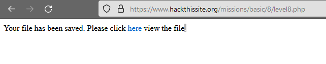

alright stephanie! lets see if you're any better than your dad. i entered my name into her field and hit submit.

an shtml file-- interesting! i decided to see if it was validating input or not..
no surprise here. this is a good injection point. i ran <!--#exec cmd="cat /var/www/hackthissite.org/html/missions/basic/8/" -->
it didn't like that. let's try again. <!--#exec cmd="ls" -->
nice; also, SOMETIMES this level would let me execute this cmd, while other times it would display the afformentioned page. not really sure what is up with that. anyway... there are a lot of files listed here. can we check any of them out with a cat cmd? NOPE! just brings up the same page telling me it's been restricted for hts' security. if i try it via the URL, it just says the page doesn't exist. i tried cding into /var/, and /etc/ which both failed. i even tried <!--#fsize file="ztxdhjxn.shtml" → just to see if i COULD touch these files at all; same issue. clearly, these files are not what we are looking for. <!--#exec cmd="ls ./"→ didn't work-- <!--#exec cmd="ls ../"-->, however, did.
resolved.